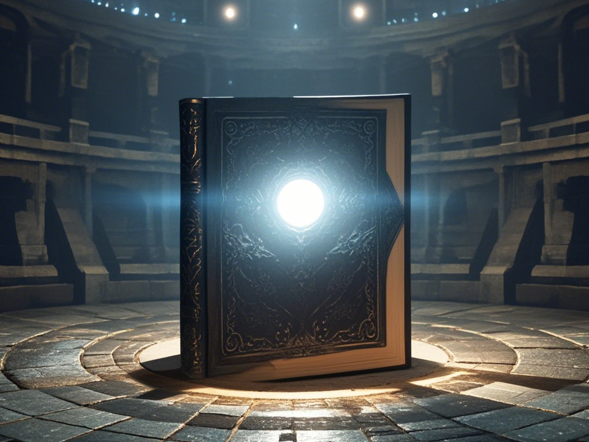

在《饥饿游戏》中，一群年轻人被迫进入残酷的竞技场，为了生存彼此厮杀，观众们冷眼旁观，胜者孤独，败者消亡。而这，不禁让人联想到我们如今的教育。
序幕：欢迎来到教育的“饥饿游戏”
在许慎的《说文解字》中，教育有着深刻而优雅的定义：“教，上所施，下所效也。育，养子使作善也。”它描述了教育应当引导灵魂向上，内化成长的过程。英语单词“education”同样来自词根“duc”，意为“引导、引领”。无论中西，教育的本质都指向精神层面的生长，是灵魂的安顿，是自我内在的丰盈。

可在现实中，我们见到的教育却像极了一场“饥饿游戏”：用最单一的标准筛选出少数胜利者，将他们高高树立起来，成为这场游戏的唯一赢家。而输家呢？他们被迅速遗忘，连陪衬都不算。
浙江大学在其微信公众号推文中用“24/67656”这样的数字比对，将最高荣誉奖学金的获得者置于金字塔顶端，剩余67632名学生则在无声中被化作背景板，反衬少数人的荣耀。
于是问题来了：教育的目的是培养灵魂的成长，还是制造这样的竞技场？
第一场：奖学金的竞技场
奖学金本该是对努力的认可，但在教育体制的包装下，它成了分化人群的利器。一场精心设计的“优绩竞赛”拉开帷幕，所有人被迫参与这场以“稀缺资源”为名的厮杀。“67656”这个数字的意义，不仅仅是简单的分母，它是教育竞争规则的冷酷写照：人们追逐的奖项是有限的，而竞争的参与者却是无限的。
在这个竞技场上，规则明确：谁的分数高、谁的履历亮眼、谁的奖状多，谁就能脱颖而出。我们仿佛看到了“饥饿游戏”中，少年们为了成为幸存者，必须在规则的逼迫下不断内耗。而这场游戏的设计者们深知，只有少数人能胜出，多数人注定失败。但这并不重要，甚至是必要的，因为失败者的存在才显得胜者的伟大。
然而，这种单一指标的竞争真正给予我们的是什么？是自身真正意义上的内在成长，还是仅仅是对身外荣誉的一味执着？我们是否都已习惯了，用排名和奖状定义自己，却逐渐丧失了反身自观的能力，荒芜了内心，犹如那外表华丽的琉璃制品，虽光彩夺目，却极易破碎，不堪一击？
第二场：精英主义的血色荣耀
当少数赢家站上领奖台，另一场戏码开始了。他们被包装成“精英”，被赋予光环和荣耀，成为教育制度的“展柜样品”。正如饥饿游戏中胜利者被装点成国家宣传的工具一样，这些少数获奖者的存在证明了竞技场的“公平”和“成功”。教育的目的不再是培养每个人，而是挑出少数几个可以被展览的“精英”，然后放进展柜里，供人欣赏。
可是，这种精英主义的荣耀真的值得称颂吗？它的背后是多数人的沉默，是教育价值的异化。我们看到的不再是灵魂的引导和自我成长，而是对少数人成功的无限放大，以及对多数人努力的彻底抹杀。在这样的规则下，胜者不是赢家，而是“展品”；而失败者呢？他们连展示的资格都没有，被迅速边缘化，消失在聚光灯的死角。
这种“血色荣耀”不仅残酷，还极其虚伪。它把胜利者的成就等同于“价值”，把失败者的努力等同于“无意义”，彻底消解了教育的本质意义。
尾声：教育不能是一场饥饿游戏
教育的本质，原应是引领灵魂向上，助人探索自我。然而，当它沦为一场“饥饿游戏”，原本充满生命力的成长之路被生硬地划成竞技场，每个人都在拼命奔跑，却忘记了为何而跑、为何而学。
那些“赢家”真的赢了吗？当教育只剩下单一的评判标准，当竞争的血腥淹没了求知的愉悦，哪怕站在领奖台上，是否真的能体会到内心的丰盈？更不用说，那些“失败者”在这个游戏中被迫扮演的角色。他们可能因未能达成所谓的“成功”而否定自己，甚至被整个系统抛弃。可我们要问：这些标签，真的代表了一个人的全部价值吗？

教育不能是一场饥饿游戏。它应当培养每个人独一无二的精神世界，而不是仅仅挑选少数人登上荣誉的展台。我们需要反思这种将教育工具化、竞技化的路径：我们追逐的是虚荣，还是更深层的自我实现？我们收获的是对知识的热爱，还是对胜负的执念？
当“饥饿游戏”的钟声响起，每个人都被迫成为参赛者时，教育便早已违背了它的初心。也许是时候停下来，问问自己——
究竟什么才是教育的真谛？


发表您的看法